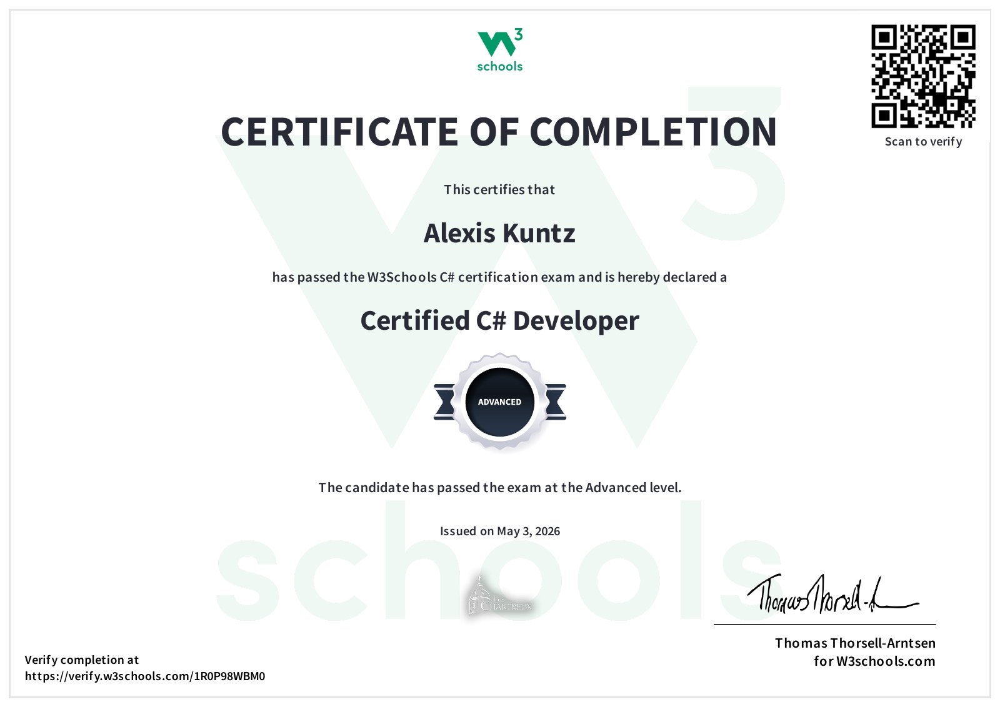

Agrandir le diplôme
Certification
Certified C# Developer
W3Schools — Niveau avancé
Cette certification valide ma maîtrise avancée du langage C#, de sa syntaxe et des principes essentiels de la programmation orientée objet.